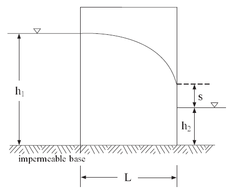
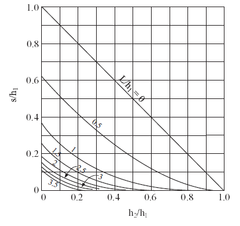
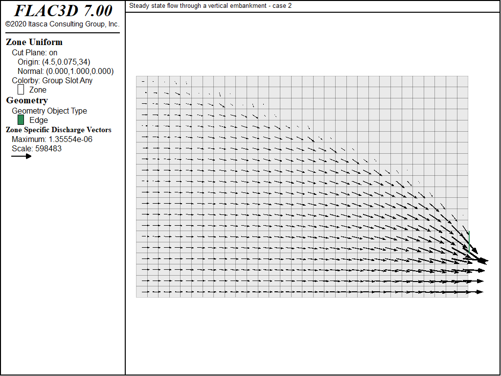
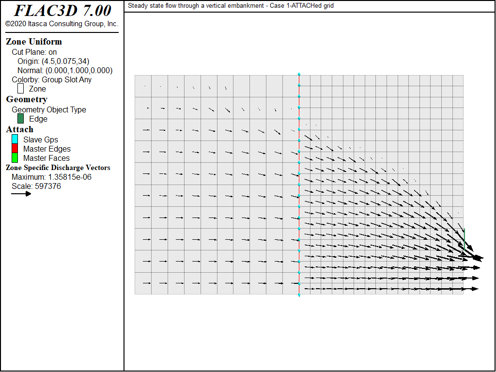
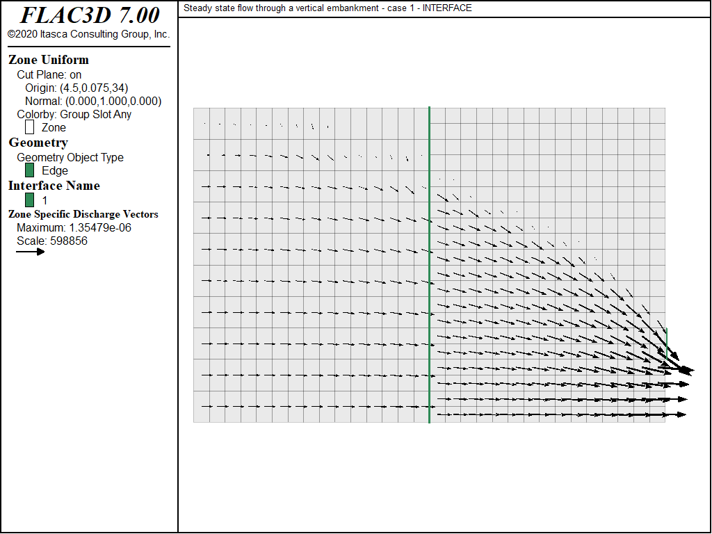

带自由面的稳态流体流动
注意
本示例的项目文件可在 FLAC3D 中查看/运行。[1] 该项目的主数据文件见本示例末尾（main data files）。
本示例是经典问题：稳态渗流通过一个均质堤坝，其竖直边坡临不同的水位，且位于不透水基座之上。将总流量 \(Q\) 和渗流面长度 \(s\) 与精确解进行比较。图 1（Figure 1） 给出了问题的几何和边界条件。

图 1：问题几何与边界条件。
流体为均质，流动由达西定律控制，并假定潜水面以下土体的孔隙完全充水、潜水面以上的孔隙完全充气。堤坝宽度为 \(L\)，不透水基座以上的上游水位和下游水位分别为 \(h_{1}\) 和 \(h_{2}\)。
Charny 指出（Harr，1991），通过单位厚度坝段的总流量的精确解由 Dupuit 公式给出：
其中 \(k\) 为迁移系数，\(\rho _{w}\) 为水的密度，\(g\) 为重力加速度。渗流面长度 \(s\)（即坝体下游面上自由面高出 \(h_{2}\) 的高程）由 Polubarinova-Kochina（1962）求得，并以问题特征尺寸的函数形式给出在图 2（Figure 2） 中。

图 2：Polubarinova-Kochina（1962）的渗流面解。
FLAC3D 模拟针对一组特定参数进行：
| L | = | 9 m |
| h1 | = | 6 m |
| h2 | = | 1.2 m |
使用了若干材料性质：
| 渗透率（\(k\)） | 10-10 (m/sec)(Pa/m) |
| 孔隙率（\(n\)） | 0.3 |
| 水的密度（\(\rho_w\)） | 1000 kg/m3 |
| 水的体积模量（\(K_f\)） | 1000 Pa |
| 土体干密度（\(\rho\)） | 2000 kg/m3 |
| 重力加速度（\(g\)） | 10 m/sec2 |
研究了对应于两种不同初始条件的两个工况：
| 工况 1： | 堤坝内的水位最初为 \(h\) = \(h_2\) = 1.2 m。随后将上游水位升高至 \(h\) = \(h_1\)。 |
| 工况 2： | 水位最初为 \(h\) = \(h_1\) = 6 m。随后将下游水位降低至 \(h\) = \(h_2\)。 |
工况 1 的数据文件列于“FreeSurfaceSteadyStateFluidFlow-Case1.dat”，工况 2 的数据文件列于“FreeSurfaceSteadyStateFluidFlow-Case2.dat”。两个工况的网格和边界条件相同。网格在宽度方向包含 30 个网格单元，高度方向 20 个，厚度方向 1 个。边界条件为：上游面在 \(h_{1}\) 水位以下、下游面在 \(h_{2}\) 水位以下按静水孔隙压力分布；下游面从 \(h_{2}\) 水位至 \(h_{1}\) 水位之间孔隙压力为零；其余边界为无流动条件。两个工况的差异在于初始孔隙压力和饱和度分布。在工况 1 中，\(h_2\) 以上饱和度与孔隙压力均为零；该水位以下饱和度为 1、压力为静水压力。在工况 2 中，所有网格点的饱和度均为 1，网格内的孔隙压力遵循重力梯度。数值模拟一直进行到检测到稳态条件为止。
为加快计算达到稳态，水的体积模量取一个较小的值（\(K_{f}\) = 103 Pa），以与自由面稳定性相容。（所用判据为 \(K_{f}\geq 0.3\rho _{w}gL_{z}\)，其中 \(L_{z}\) 为潜水面附近的最大竖向网格单元尺寸，详见时间尺度（Time Scales）。）
两种初始条件下的最终渗流形态相似（见图 3（Figure 3） 和 图 4（Figure 4））。渗流长度的数值解定义为坝体下游面上尾水位与渗流矢量模为零的点之间的距离。渗流长度的解析值由图 2（Figure 2） 确定。对于本问题，\(h_{2}/h_{1}\) = 0.2、\(L/h_{1}\) = 1.5，因此 \(s/h_{1}\) 的值为 0.1。如图所示，渗流长度的数值解与图中以粗线绘出的解析解吻合良好。使用 FISH 函数 QFLAC 程序（qflac） 确定坝体单位厚度的流量 \(Q\)：工况 1 的稳态数值为 1.914 × 10-6m2/s；工况 2 为 1.912 × 10-6m2/s。这些值接近由方程(1)针对本问题确定的解析值 1.920 × 10-6m2/s。



图 4：稳态渗流矢量与渗流面解——工况 2。
重复工况 1，以检验通过两个子网格之间的流体流动，这些子网格分别使用 zone attach 命令或 zone interface create 命令连接。“FreeSurfaceSteadyStateFluidFlow-Case1-Attach.dat”列出了通过附着网格流动的命令，“FreeSurfaceSteadyStateFluidFlow-Case1-Interface.dat”列出了通过接触面流动的命令。两个模型的结果均与原始工况 1 几乎相同；Attach 模型和 接触面（Interface） 模型的流量分别为 1.924 × 10-6m2/s 和 1.913 × 10-6m2/s。可将图 5（Figure 5） 和图 6（Figure 6） 与图 3（Figure 3） 进行比较。请注意，若在使用 zone interface element 命令时指定 最大边长（maximum-edge），则接触面将起不透水边界的作用。将 单元界面 1 元素最大边（zone.interface.1.element.maximum-edge） 相应行中的分号去掉，即可观察到这一响应。


图 5：附着网格的稳态渗流矢量——工况 1。


图 6：带接触面网格的稳态渗流矢量——工况 1。
参考文献
Harr, M. E. Groundwater and Seepage. Dover (1991).
数据文件
FreeSurfaceSteadyStateFluidFlow-Case1.dat
model new
model large-strain off
model title "Steady state flow through a vertical embankment - case 1"
program call 'fishFunctions'
model configure fluid
zone create brick size 30 1 20 point 1 (9.0,0,0) point 2 (0,0.15,0) ...
point 3 (0,0,6.0)
; --- 流体流动模型 ---
zone fluid cmodel assign isotropic
zone fluid property permeability 1e-10 porosity 0.3
zone fluid biot off
zone gridpoint initialize fluid-modulus 1e3
zone gridpoint initialize saturation 0.0
zone gridpoint initialize saturation 1.0 ...
range union position-x 0 position-z 0.0 1.19
zone gridpoint initialize pore-pressure 1.2e4 grad (0,0,-1e4) ...
range position-z 0.0 1.19
zone face apply pore-pressure 6.0e4 grad 0 0 -1e4 ...
range position-x 0.0
zone face apply pore-pressure 1.2e4 grad 0 0 -1e4 ...
range position-x 9.0 position-z 0.0 1.19
zone face apply pore-pressure 0.0 ...
range position-x 9.0 position-z 1.2 6.0
; 添加粒子轨迹
zone fluid track create line begin (0,0.1,0.5) end (0,0.1,5.5) ...
segment 12 group "set1"
zone fluid track active on
; --- 设置 ---
zone initialize fluid-density 1e3
zone gridpoint initialize fluid-tension 0.0
model gravity 0 0 -10
model mechanical active off
model fluid active on
; --- 试验 ---
model solve ratio-flow 1.e-3
[show_seepage_face]
fish list [qflac] [qsol]
model save 'ch2a'
FreeSurfaceSteadyStateFluidFlow-Case2.dat
model new
model large-strain off
model title "Steady state flow through a vertical embankment - case 2"
program call 'fishFunctions'
model configure fluid
zone create brick size 30 1 20 point 1 (9.0,0,0) point 2 (0,0.15,0) ...
point 3 (0,0,6.0)
; --- 流体流动模型 ---
zone fluid cmodel assign isotropic
zone fluid property permeability 1e-10 porosity 0.3
zone fluid biot off
zone gridpoint initialize fluid-modulus 1e3
zone gridpoint initialize saturation 1.0
zone gridpoint initialize saturation 0.0 ...
range position (0.01,0,5.99) (6.0,0.15,6.0)
zone gridpoint initialize pore-pressure 6.0e4 grad (0,0,-1e4) ...
range position-z 0.0 6.0
zone face apply pore-pressure 6.0e4 grad 0 0 -1e4 ...
range position-x 0.0
zone face apply pore-pressure 1.2e4 grad 0 0 -1e4 ...
range position (9.0,0,0) (9.0,0.15,1.19)
zone face apply pore-pressure 0.0 ...
range position (9.0,0,1.2) (9.0,0.15,6.0)
; --- 设置 ---
zone initialize fluid-density 1e3
zone gridpoint initialize fluid-tension 0.0
model gravity 0 0 -10
model mechanical active off
model fluid active on
; --- 试验 ---
model solve ratio-flow 1e-3
[show_seepage_face]
fish list [qflac] [qsol]
model save 'ch2b'
FreeSurfaceSteadyStateFluidFlow-Case1-Attach.dat
model new
model large-strain off
model title ...
"Steady state flow through a vertical embankment - Case 1-ATTACHed grid"
model configure fluid
program call 'fishFunctions'
zone create brick size 10 1 10 point 0 (0,0,0) point 1 (4.5,0,0) ...
point 2 (0,0.15,0) point 3 (0,0,6)
zone create brick size 15 1 20 point 0 (4.5,0,0) point 1 (9,0,0) ...
point 2 (4.5,0.15,0) point 3 (4.5,0,6) merge off
zone attach by-face
; --- 流体流动模型 ---
zone fluid cmodel assign isotropic
zone fluid property permeability 1e-10 porosity 0.3
zone fluid biot on
zone gridpoint initialize biot 3.333e3
zone gridpoint initialize saturation 0.0
zone gridpoint initialize saturation 1.0 ...
range union position-x 0 position-z 0.0 1.19
zone gridpoint initialize pore-pressure 1.2e4 grad (0,0,-1e4) ...
range position-z 0.0 1.19
zone face apply pore-pressure 6.0e4 grad 0 0 -1e4 ...
range position-x 0.0
zone face apply pore-pressure 1.2e4 grad 0 0 -1e4 ...
range position-x 9.0 position-z 0.0 1.19
zone face apply pore-pressure 0.0 ...
range position-x 9.0 position-z 1.2 6.0
; --- 设置 ---
zone initialize fluid-density 1e3
zone gridpoint initialize fluid-tension 0.0
model gravity 0 0 -10
model mechanical active off
model fluid active on
; --- 试验 ---
model solve ratio-flow 1.e-3
[show_seepage_face]
fish list [qflac] [qsol]
model save 'attfl'
FreeSurfaceSteadyStateFluidFlow-Case1-Interface.dat
model new
model large-strain off
model title ...
"Steady state flow through a vertical embankment - case 1 - INTERFACE"
model configure fluid
program call 'fishFunctions'
zone create brick size 15 1 10 point 0 (0,0,0) point 1 (4.5,0,0) ...
point 2 (0,0.15,0) point 3 (0,0,6) ...
group 'Left'
zone create brick size 15 1 20 point 0 (5.5,0,0) point 1 (10,0,0) ...
point 2 (5.5,0.15,0) point 3 (5.5,0,6) ...
group 'Right'
; --- 界面 ---
zone interface create by-face range position-x 5.5
zone interface node property stiffness-shear 2e9 stiffness-normal 2e9 ...
friction 15 tension 1e10
; zone interface element maximum-edge 1 ; <=== 使界面不透水
zone gridpoint initialize position-x -1.0 add range group 'right'
; --- 流体流动模型 ---
zone fluid cmodel assign isotropic
zone fluid property permeability 1e-10 poros 0.3
zone fluid biot on
zone gridpoint initialize biot 3.333e3
zone gridpoint initialize saturation 0.0
zone gridpoint initialize saturation 1.0 ...
range union position-x 0 position-z 0.0 1.19
zone gridpoint initialize pore-pressure 1.2e4 grad (0,0,-1e4) ...
range position-z 0.0 1.19
zone face apply pore-pressure 6.0e4 grad 0 0 -1e4 ...
range position-x 0.0
zone face apply pore-pressure 1.2e4 grad 0 0 -1e4 ...
range position-x 9.0 position-z 0.0 1.19
zone face apply pore-pressure 0.0 ...
range position-x 9.0 position-z 1.2 6.0
; --- 力学模型 ---
zone cmodel assign elastic
zone property bulk 2 shear 1
model cycle 0 ; <--- 用于初始化权重系数
; --- 设置 ---
zone initialize fluid-density 1e3
zone gridpoint initialize fluid-tension 0.0
model gravity 0 0 -10
model mechanical active off
model fluid active on
; --- 试验 ---
model solve ratio-flow 1.e-3
[show_seepage_face]
fish list [qflac] [qsol]
model save 'intfl'
尾注
| [1] | 要在 FLAC3D 中查看该项目，请使用程序菜单。
⮡ FLAC |
| 这些内容对您有帮助吗？… 版权与免责声明 | FLAC3D © 2019, Itasca | 原文更新于 2020 年 10 月 8 日 |